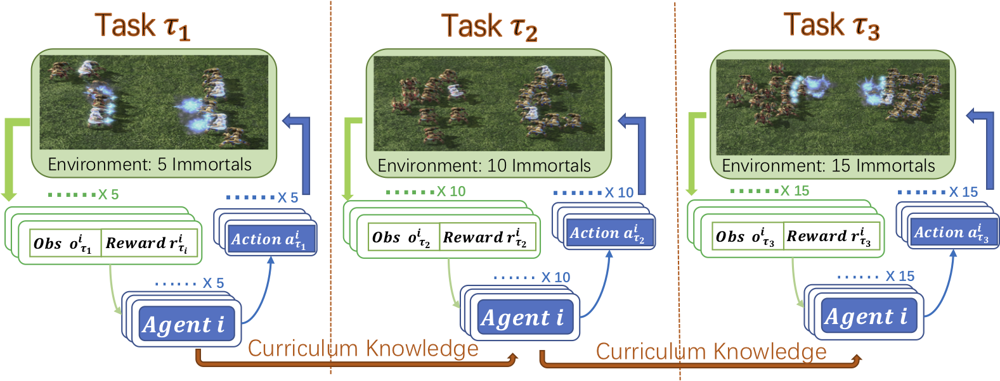
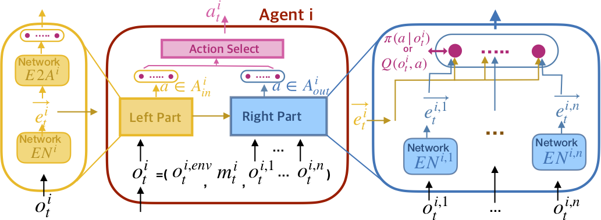
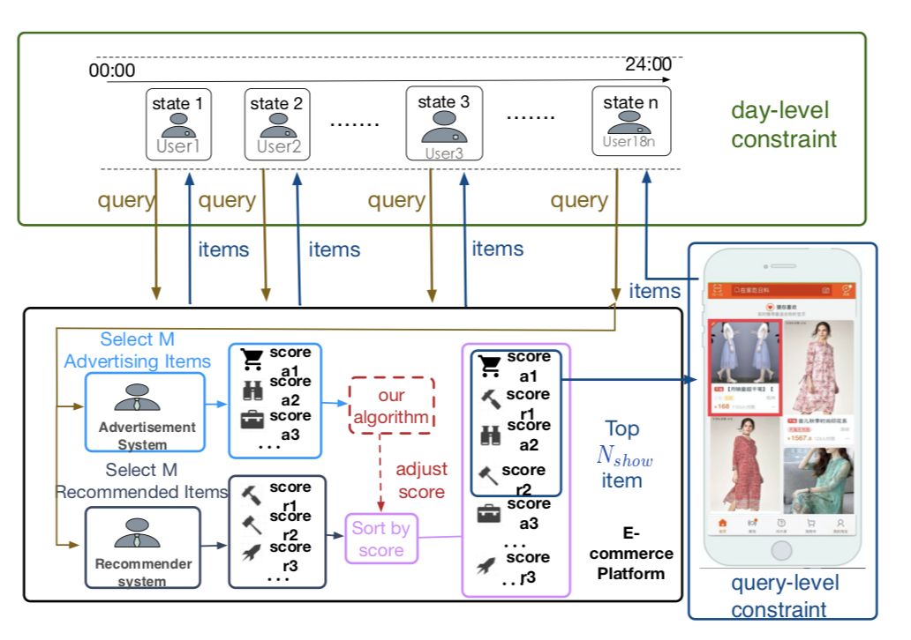
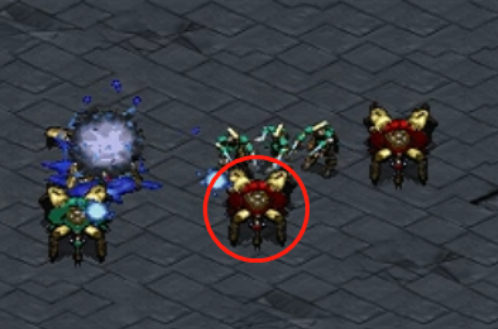

|
I’m a PhD student at Tianjin University in Professor Jianye Hao’s group, where I work on Multiagent (Deep) Reinforcement Learning.
|

|
|
I have an interest in using deep reinforcement learning in multi-agent systems. I believe that MAS (Multi-Agent) is a more realistic description of the (large) problem in the real world. I also believe that deep reinforcement learning can solve more complex practical problems in the MAS field. |
|  |
Weixun Wang, Tianpei Yang, Yong Liu, Jianye Hao, Xiaotian Hao, Yujing Hu, Yingfeng Chen, Changjie Fan, Yang Gao arXiv preprint In this paper, we design a novel Dynamic Multiagent Curriculum Learning (DyMA-CL) to solve large-scale problems by starting from learning on a multiagent scenario with a small size and progressively increasing the number of agents. We propose three transfer mechanisms across curricula to accelerate the learning process. Moreover, due to the fact that the state dimension varies across curricula,, and existing network structures cannot be applied in such a transfer setting since their network input sizes are fixed. Therefore, we design a novel network structure called Dynamic Agent-number Network (DyAN) to handle the dynamic size of the network input. |
|  |
Weixun Wang, Tianpei Yang Yong Liu, Jianye Hao, Xiaotian Hao, Yujing Hu, Yingfeng Chen, Changjie Fan, Yang Gao arXiv preprint In this paper, we propose a novel network architecture, named Action Semantics Network (ASN), that explicitly represents such action semantics between agents. ASN characterizes different actions' influence on other agents using neural networks based on the action semantics between agents. |
|  |
Weixun Wang, Junqi Jin, Jianye Hao, Chunjie Chen, Chuan Yu, Weinan Zhang, Jun Wang, Yixi Wang, Han Li, Jian Xu, Kun Gai CIKM 2019 In this paper, we investigate the problem of advertising with adaptive exposure, in which the number of ad slots and their locations can dynamically change over time based on their relative scores with recommendation products. |
|  |
Xiaotian Hao *(Equal contribution), Weixun Wang *(Equal contribution), Jianye Hao, Yaodong Yang AAMAS 2019 The first to combine self imitation learning with GAIL and propose a novel framework IGASIL to address the multiagent coordination problems. |
|
Weixun Wang, Jianye Hao, Yixi Wang, Matthew Taylor AAMAS 2018 Workshop ALA In this work, we propose a deep multiagent reinforcement learning approach that investigates the evolution of mutual cooperation in SPD games. |